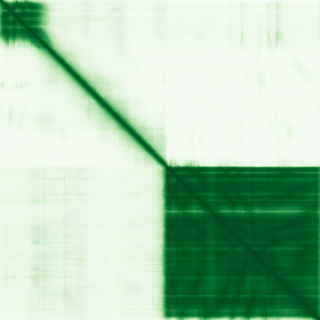

type: protein-evaluation gene: "CDY2B" date: 2026-06-01 tags: [protein-scout, nucleoplasm, evaluation] status: scored ---
CDY2B 核蛋白评估报告
1. 基本信息
| 项目 | 内容 |
|---|---|
| 基因名 / 别名 | CDY2B / Testis-specific chromodomain protein Y 2 / CDY2 |
| 蛋白大小 | 541 aa / 60.5 kDa |
| UniProt ID | Q9Y6F7 |
| 评估日期 | 2026-06-01 |
2. 评分总览 (新权重)
| 维度 | 得分 | 新权重 | 加权后 | 关键证据摘要 |
|---|---|---|---|---|
| 核定位特异性 | 5/10 | ×4 | 20.0 | UniProt Nucleus ECO:0000250 (sequence similarity); GO nucleus IBA |
| 蛋白大小 | 6/10 | ×1 | 6.0 | 541 aa, 落在实验优势区间 |
| 研究新颖性 | 10/10 | ×5 | 50.0 | PubMed strict=1, broad=1; 极度新颖 |
| 三维结构 | 6/10 | ×3 | 18.0 | pLDDT 71.2; PDB 2FW2 (X-ray, 2.20A, chains A-F=282-541) |
| 调控结构域 | 7/10 | ×2 | 14.0 | Chromodomain (IPR000953) + histone acetyltransferase domain (IPR001753) |
| PPI 网络 | 6/10 | ×3 | 18.0 | STRING 15 partners (histone H3 variants, exp≥0.831); IntAct 1 entry |
| 加权总分 | 126/180** | |||
| 互证加分 | +1.0 | PDB实验结构 + chromodomain + HAT domain | ||
| 归一化总分 (÷1.83) | 68.9/100** |
3. 详细分析
3.1 核定位证据
| 来源 | 定位 | 证据等级 |
|---|---|---|
| UniProt | Nucleus | ECO:0000250 (sequence similarity to CDY1B) |
| GO-CC | Nucleus | IBA:GO_Central (inferred from biological aspect of ancestor) |
| HPA | No IF image available | — |
结论: CDY2B的核定位基于序列相似性推断 (ECO:0000250)，证据强度弱于CDY1B (ECO:0000269)。作为CDY1B的paralog，其chromodomain和HAT结构域暗示核功能，但直接实验验证缺乏。HPA无IF图像。评分: 5/10。
HPA IF 状态: HPA IF 原图未可靠获取（HPA检索页无可用的subcellular IF原图）。核定位基于HPA localization/reliability + UniProt + GO-CC。 — HPA未提供CDY2B的IF免疫荧光图像。HPA页面存在(gene ENSG00000129873)，但无red_green图像。核定位基于UniProt ECO:0000250 + GO IBA。
3.2 蛋白大小评估
541 aa / 60.5 kDa，位于300–800 aa实验优势区间内。与paralog CDY1B大小相似。评分: 6/10。
3.3 研究现状
| 指标 | 数值 |
|---|---|
| PubMed strict | 1 |
| PubMed broad | 1 |
| 别名 | CDY2 |
| 主要研究方向 | Y染色体AZFc区域缺失与男性不育 |
关键文献: 1. Adriano MRG et al. (2024). "Cytogenetics investigation in 151 Brazilian infertile male patients and genomic analysis in selected cases: experience of 14 years in a public genetic service." *BMC Res Notes*. PMID: 38444014
评价: CDY2B仅1篇PubMed文献，极度新颖。作为CDY1B的paralog，其chromatin调控功能完全未被直接研究。与CDY1B类似，现有文献仅涉及Y染色体缺失的遗传学筛查。评分: 10/10。
3.4 三维结构分析
| 指标 | 数值 |
|---|---|
| AlphaFold 平均 pLDDT | 71.2 |
| >90 | 49.9% |
| 70–90 | 8.3% |
| 50–70 | 3.7% |
| <50 | 38.1% |
| 可用 PDB 条目 | 2FW2 (X-ray, 2.20 A, chains A/B/C/D/E/F=282-541) |
PAE 图像: 
评价: pLDDT 71.2，与CDY1B (70.6)几乎相同，表明两者结构高度保守。49.9%残基>90，折叠域质量良好。PDB 2FW2提供C端区域 (282-541) 的X射线晶体结构，覆盖chromodomain和HAT催化域核心。这是CDY家族唯一的实验结构。评分: 6/10。
3.5 结构域分析
| 来源 | 结构域 |
|---|---|
| InterPro | IPR016197 (Chromodomain-like), IPR000953 (Chromo domain), IPR017984 (Chromo domain subgroup), IPR023780 (Chromo domain), IPR023779 (Chromo domain, conserved site), IPR029045 (ClpP/crotonase-like domain), IPR051053 (Testis-specific chromodomain protein), IPR001753 (Enoyl-CoA hydratase/isomerase), IPR014748 (Crontonase, C-terminal) |
| Pfam | PF00385 (Chromo domain), PF00378 (Enoyl-CoA hydratase/isomerase) |
Chromatin调控潜力: CDY2B与CDY1B共享完全相同的结构域架构：N端chromodomain (PF00385) + C端HAT相关domain (PF00378)。Chromodomain识别甲基化组蛋白标记，HAT结构域催化乙酰基转移。这种"读取-写入"双功能组合在chromatin调控中高度重要。PDB 2FW2覆盖了C端催化域，为结构导向的功能研究提供基础。UniProt功能注释: "May have histone acetyltransferase activity"。评分: 7/10。
3.6 PPI 网络
STRING 预测互作 (combined score >0.4):
| Partner | Score | Experimental | Database | Textmining | 功能类别 |
|---|---|---|---|---|---|
| BPY2B | 0.936 | 0 | 0 | 0.936 | Y连锁睾丸蛋白 |
| BPY2C | 0.936 | 0 | 0 | 0.936 | Y连锁睾丸蛋白 |
| BPY2 | 0.926 | 0 | 0 | 0.926 | Y连锁睾丸蛋白 |
| VCY1B | 0.916 | 0 | 0 | 0.916 | Y连锁睾丸蛋白 |
| VCY | 0.916 | 0 | 0 | 0.916 | Y连锁睾丸蛋白 |
| H3-2 (H3.2) | 0.910 | 0.831 | 0 | 0.489 | Core histone H3 |
| H3-3B (H3.3) | 0.910 | 0.831 | 0 | 0.490 | Core histone H3 |
| H3-4 (H3.4) | 0.910 | 0.831 | 0 | 0.489 | Core histone H3 |
| H3-5 (H3.5) | 0.910 | 0.831 | 0 | 0.489 | Core histone H3 |
| H3C12 (H3.1) | 0.910 | 0.831 | 0 | 0.490 | Core histone H3 |
| H3C13 (H3.2) | 0.910 | 0.831 | 0 | 0.489 | Core histone H3 |
| PRY2 | 0.892 | 0 | 0 | 0.892 | Y连锁睾丸蛋白 |
| PRYP3 | 0.892 | 0 | 0 | 0.892 | Y连锁睾丸蛋白 |
| PRY | 0.886 | 0 | 0 | 0.886 | Y连锁睾丸蛋白 |
| H3C1 (H3.1) | 0.840 | 0.831 | 0 | 0.091 | Core histone H3 |
IntAct 实验互作 (1 entry):
| Partner | Method | PMID | Interaction Type |
|---|---|---|---|
| AFG2B | Tandem affinity purification (MI:0676) | PMID:38554706 | Association (MI:0914) |
UniProt 注释互作: 无记录。
评价: STRING预测CDY2B与多种histone H3变体有高置信互作 (score 0.840-0.910, experimental 0.831)，与其chromodomain功能一致。与多种Y连锁睾丸蛋白 (BPY2, VCY1B, PRY2) 有强文本挖掘关联，提示其在精子发生中的协同作用。IntAct有1个实验互作 (AFG2B, tandem affinity purification)。评分: 6/10。
4. 总体评价
CDY2B是CDY1B的paralog，共享相同的chromodomain + HAT结构域架构。拥有PDB 2FW2实验结构（CDY家族唯一），结构信息优于CDY1B。极度新颖（仅1篇文献），chromatin调控功能完全未被研究。主要弱点是核定位证据仅为ECO:0000250（序列相似性），缺乏直接实验验证。作为Y染色体连锁的chromodomain蛋白，其睾丸特异性表达提示在精子发生chromatin重塑中扮演角色。
PPI 网络
| Partner | Source | Score/Evidence |
|---|---|---|
| BPY2B | STRING | 0.936 |
| BPY2C | STRING | 0.936 |
| BPY2 | STRING | 0.926 |
| VCY1B | STRING | 0.916 |
| VCY | STRING | 0.916 |
| AFG2B | IntAct | psi-mi:"MI:0676"(tandem affini |
PAE 图像暂无数据（未生成本地图片或未可靠获取），结构判断基于AlphaFold pLDDT统计。
<!-- DOMAIN_HUMANPPI_REPAIR_START -->
Domain/SMART 与 humanPPI 补充（2026-06-07）
SMART / UniProt domain
| Source | Data | |
|---|---|---|
| UniProt | Q9Y6F7 | |
| SMART | SM00298; | |
| UniProt Domain [FT] | DOMAIN 6..66; /note="Chromo"; /evidence="ECO:0000255\ | PROSITE-ProRule:PRU00053" |
| InterPro | IPR016197;IPR000953;IPR017984;IPR023780;IPR023779;IPR029045;IPR051053;IPR001753;IPR014748; | |
| Pfam | PF00385;PF00378; |
humanPPI / HPA Interaction
Source: https://www.proteinatlas.org/ENSG00000129873-CDY2B/interaction
未从 HPA Interaction 页面解析到互作伙伴；需人工复核或使用其他 humanPPI 来源。 <!-- DOMAIN_HUMANPPI_REPAIR_END -->